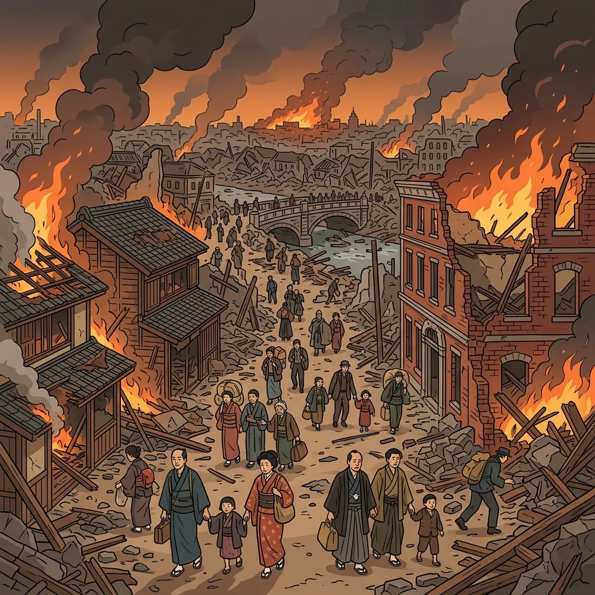

28. 大正デモクラシーと新しい社会運動
大正時代（1910、1920年代）、第一次世界大戦後の平和な空気を背景に、政治の民主化や自由を求める世論がかつてないほど高まりました。これを「大正デモクラシー」と呼びます。今回は、民主主義を求めた政治運動と、女性や被差別部落の人々、労働者たちが立ち上がった新しい社会運動の歩み、そして1925年の「アメとムチ」の法律を詳しく解説します！
1. 大正デモクラシーと民本主義（みんぽんしゅぎ）
大正時代には、藩閥による独裁を崩し、国民の意見を政治に反映させるための憲政擁護運動が盛んになり、学問の世界からも民主主義を後押しする考え方が生まれました。
① 吉野作造（よしのさくぞう）の民本主義
東京帝国大学の教授であった吉野作造は、大日本帝国憲法が定める「天皇主権」の枠組みを壊さずに民主主義を取り入れるため、民本主義（みんぽんしゅぎ）を提唱しました。
これは、「政治の目的は一般民衆の利益や幸福に置くべきであり、すべての決定は民衆の意向に従って行うべきだ」とする主張です。この考え方は、選挙権をすべての国民に与える「普通選挙運動」の強力な理論的支柱となり、多くの知識人や学生に支持されました。
2. 多様な社会運動の広がり
自由な空気が広まる中、社会の中で弱い立場にあった労働者や農民、女性、差別されていた人々が、自分たちの人権や環境の改善を求めて次々と組織を立ち上げました。
① 女性の地位向上運動（平塚らいてう）
平塚らいてう（ひらつからいてう）らは、女性による日本初の文芸誌『青鞜（せいとう）』を発刊し、「原始、女性は太陽であった」と宣言して女性の自立を訴えました。さらに、市川房枝（いちかわふさえ）らと新婦人協会を設立し、女性の政治参加の権利（当時は女性が演説を聞くことすら法律で禁じられていました）を求める運動を行いました。
② 被差別部落の解放運動（全国水平社、1922年）
江戸時代以来、厳しい差別に苦しめられていた人々が、自らの団結によって差別を打破しようと、1922年に京都で全国水平社（ぜんこくすいへいしゃ）を結成しました。「人の世に熱あれ、人間に光あれ」という水平社宣言は、日本初の文明的な人権宣言として有名です。
③ 労働者・農民の運動
労働者は「日本労働総同盟」を結成して労働時間の短縮や労働環境の改善を求め、農民も「日本農民組合」を結成して地主に対して小作料（土地代）の引き下げを求める小作争議を全国で起こしました。
3. 1925年の「アメとムチ」の法制定
国民の激しい普通選挙運動の前に、政府はついに選挙権の拡大を認めましたが、それと同時に危険な思想を取り締まる法律を同時に作りました。この1925年に制定された２つの法律のセットはテストの超頻出ポイントです！
| 法律名 | 制定された内容 | ポイントと意義 |
|---|---|---|
| 【アメ】 普通選挙法 |
納税額による制限を完全に廃止し、満25歳以上のすべての男子に選挙権を与える。 | 有権者の数は全人口の約20%（約1240万人）に急増しました。しかし、女性にはまだ選挙権はありませんでした。 |
| 【ムチ】 治安維持法 |
天皇制（国体）を否定する運動や、私有財産制を否定する運動を取り締まり処罰する。 | ロシア革命の影響で広まる社会主義思想を防ぐために制定され、のちに人々の言論の自由を厳しく弾圧する武器となりました。 |
4. 関東大震災（1923年）と都市文化の発達
1920年代、日本の社会を大きく変える大災害が首都圏を襲いました。
① 関東大震災（1923年9月1日）
1923年9月1日、南関東を震源とする巨大地震が発生しました。東京や横浜の街が倒壊し、その後に発生した大火災によって、死者・行方不明者が10万人を超える甚大な被害となりました。この大混乱の中、精神不安から「朝鮮人が井戸に毒を入れた」などのデマが広がり、自警団らによって多くの朝鮮人や社会主義者が殺害される悲劇が発生しました。

図3：東京の大部分が火の海と化し、甚大な被害を出した「関東大震災」のイメージ
② 都市文化のモダン化
震災の復興を進める中で、東京の街は急速に近代都市へと生まれ変わりました。洋服を着たサラリーマンやモダンガール（モガ）、「職業婦人」が街を行き交い、百貨店（デパート）やバス、日本初のタクシー（円タク）が普及しました。また、1925年にはラジオ放送が始まり、蓄音機や映画などの大衆娯楽が一気に家庭へと広がっていきました。
🔥 この単元のテスト対策・暗記のコツ
-
★
吉野作造の「民本主義」の記述：
・「天皇主権を認めつつ、政治の目的を一般民衆の利益に置き、重要な決定は民衆の意見で行うべきだとした主張」と書けるようにしましょう。 -
★
新しい社会運動の人物と組織名：
・平塚らいてう：女性運動、文芸誌『青鞜』（のちに新婦人協会）。
・全国水平社（1922年）：部落解放運動。「国に（1922）優しく、水平社」と覚えましょう。 -
★
普通選挙法（1925年）の有権者条件（絶対必須！）：
・「満25歳以上のすべての男子（納税額の制限なし）」
・ひっかけ問題対策：「女性にはまだ選挙権がなかった」という点が最重要です。 -
★
1925年のアメとムチのセット暗記：
・「行く国（1925）選べる普通選挙、裏には治安維持法」と、普通選挙法と治安維持法が同じ年（1925年）にセットで制定されたことを覚えましょう。